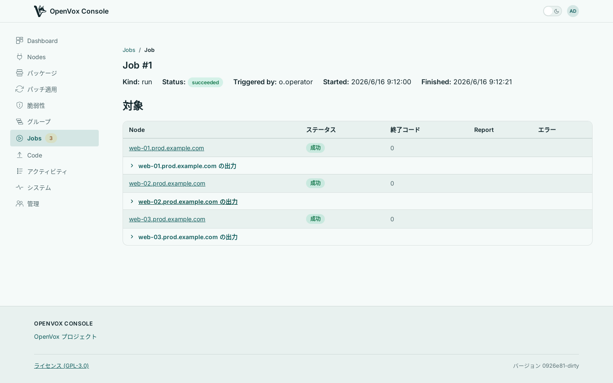

使う
Jobs を実行する
1 台の Node、選択した Node、クエリに一致する Node、または Node グループに対して、Puppet または Puppet Task を任意のタイミングで実行し、各 Node が何を行ったかを確認します。
コンソールは、次の定期実行を待たずに今すぐ Node で Puppet を実行でき、deploy したコードに含まれる Puppet の Task も実行できます。各リクエストは Job であり、対象としたすべての Node と、それぞれで何が起きたかとともに記録されます。
Job の開始には orchestrator:run が、Jobs の閲覧には orchestrator:read が必要です。Node に到達するには、その Node が接続している必要があります: Node を追加するを参照してください。
ロールが特定の Node グループに対して付与されている場合、Job を開始できるのはそれらのグループ内の Node だけで、表示されるのもそれらの Jobs だけです。グループ外の Node を指定した Job は全体が拒否され (他の Node でも何も実行されません)、コンソールはどの Node を外すべきかを示します。ユーザー、ロール、トークンを参照してください。
複数の実行や Task を順番に行うには、Plans を実行するを参照してください。Job を後で、または繰り返し開始するには、Jobs をスケジュールするを参照してください。
Puppet を実行する
対象の Node を見ている場所から、そのまま:
- 1 台の Node: その Node のページで Puppet を実行します。
- 選択した Node: Nodes ページで Node を選択し、選択したものに対して Puppet を実行します。
- グループが一致するすべての Node: グループのページで、一致する Node に対して Puppet を実行します。
いずれも対象の Node を示すダイアログを開きます。確認すると Job が開始され、その Job に移動します。
または Jobs ページから開始します。そこでは Puppet を実行と Task を実行で対象の Node を指定できます: Node を選ぶを参照してください。
実行オプション
ダイアログには 3 つのオプションがあります。どれも選ばなければ、通常の実行になります。
- No-op は、実行によって何が変わるかを報告し、何も変更しません。Job には Node ごとにその一覧が表示されます。
- デバッグ出力は、Job の各 Node について Puppet のデバッグログを記録します。
- Environment は Node にその Environment に対して実行するよう求めます。ブランチに対して Node を試すためのものです。
Environment は要求であって、上書きではありません。Node の Node グループが Environment を設定している場合、実行が何を求めても Puppet はその Environment を使います。Job では、Node の Report が届いた時点で、要求と異なる Environment で実行された各 Node に印が付きます。
オプション付きの実行では、Puppet が出力した内容が記録されます。読むには、Job の Node の行の下にある出力を開きます。長い出力は 256 KB で切り詰められ、その旨が表示されます。
実行オプションには、このバージョン以降のコンソールの Node エージェントクライアントが必要です。古いクライアントはリクエストを拒否し、その Node の行はクライアントが古すぎる旨を示して失敗します。その Node では Puppet はまったく実行されないため、no-op のリクエストが本当の実行として行われることはありません。クライアントをアップグレードし (Node エージェントを最新に保つを参照)、再度実行してください。オプションなしの実行は、どのバージョンのクライアントでも機能します。
API から、アクセストークンを使って:
curl -X POST https://console.example.com/api/v1/orchestrator/runs \
-H "Authorization: Bearer <access token>" \
-H 'Content-Type: application/json' \
-d '{"targets":["web01.example.com","web02.example.com"]}'
オプション付きの実行には options を追加します。3 つのうちどれを省略してもかまいません:
-d '{"targets":["web01.example.com"],
"options":{"noop":true,"environment":"feature_x","debug":true}}'
Environment 名が無効な場合、openvoxserver にそのような Environment がない場合、またはコンソールが知らないオプションを指定した場合、リクエストは拒否され、Job は作成されません。
Node を選ぶ
Jobs ページの Puppet を実行と Task を実行は、実行する Node を次の 3 つのいずれかの方法で尋ねます:
-
Nodes の一覧: certname を 1 行に 1 つずつ。
-
クエリ:
certnameを返す PQL クエリ。コンソールは Job の開始時にそれを openvoxdb に対して実行し、Job は返された Node で実行されます:inventory[certname] { facts.os.family = "Debian" and facts.os.release.major = "12" } -
Node グループ: Job の開始時にグループに含まれている Node。
Nodes をプレビューは、選択内容が現時点で意味する Node を表示します。ダイアログは何かを開始する前に必ずそれを表示します: 1 回目に実行を選ぶとプレビューが実行され、2 回目に Job が開始されます。どの Node にも一致しないクエリやグループでは何も開始されません。
クエリは PQL 独自の構文で書き、certname を返す必要があります。コンソールや openvoxdb が使えないクエリは理由とともに拒否され、構文エラーの場合は誤りの箇所を示す openvoxdb 自身のメッセージが表示されます。
ロールが特定の Node グループに対して付与されている場合、クエリやグループで得られるのは一致する Node のうち自分のグループにあるものだけで、それ以外については何も示されません。また、クエリにサブクエリ (あるエンティティの波括弧の中に別のエンティティの波括弧があるもの) を含めることはできません。そのようなクエリは、見られない Node について知るために使えてしまうためです。上の例のように単一のエンティティをクエリしてください。inventory は Node のすべての Fact と trusted fact に届きます。一覧で指定した Node については、引き続きすべてか無しかです。
API からは、targets の代わりに query または group (Node グループの ID) を指定します:
curl -X POST https://console.example.com/api/v1/orchestrator/runs \
-H "Authorization: Bearer <access token>" \
-H 'Content-Type: application/json' \
-d '{"query":"inventory[certname] { facts.os.family = \"Debian\" }",
"options":{"noop":true}}'
POST /api/v1/orchestrator/targets/resolve は同じ targets、query、group を受け取り、何も開始せずに Node を返します。
Task を実行する
Task は、モジュールの tasks ディレクトリに含まれるスクリプトと、そのパラメーターを記述したメタデータファイルからなります。コンソールは deploy したコード内の Task を実行するため (コードを deploy するを参照)、Task のためにインストールするものは、それを含むモジュールを deploy する以外にありません。
Task は Puppet run と同じ場所から実行できます: Node のページ、Nodes ページでの選択、グループの一致する Node、そして Jobs ページの Task を実行です。ダイアログでは:
- Environment を選び、Task の取得元とします。Task は、その Environment に現在 deploy されているコードから読み込まれます。
- Task を選びます。その下に説明と各パラメーターのフィールドが表示されます。
*の付いたフィールドは必須で、空のままにしたフィールドにはメタデータで宣言された既定値が使われます。 - 必要ならタイムアウトを設定します。時間切れになった時点でまだ実行中の Task は、それが開始したものとともに停止され、タイムアウトとして報告されます。指定しない限り 30 分で、最大 55 分です。
- Task を実行は Job を開始し、その Job に移動します。
コンソールは何かを開始する前に、Task のメタデータに照らしてパラメーターを検査し、拒否した各フィールドに理由の印を付けます。正しくなるまで Job は作成されません。
ロールは一部の Task に限定できます。その場合、Task の一覧には実行できるものだけが表示されます。実行できない Task は、一覧から選んでも API で要求しても、その名前とともに 403 で拒否されます。ロールを一部の Task に限定するを参照してください。
Task のメタデータで sensitive とされたパラメーター (パスワードやトークン) は、マスクされたフィールドに入力します。その値は Node にだけ送られ、他のどこにも送られません: Job に保存されたパラメーター、Job のページ、アクティビティログ、監査ログには、代わりに Sensitive [value redacted] と表示されます。
API からは、Task、そのパラメーター、そして任意で Environment と秒単位のタイムアウトを指定します:
curl -X POST https://console.example.com/api/v1/orchestrator/tasks \
-H "Authorization: Bearer <access token>" \
-H 'Content-Type: application/json' \
-d '{"targets":["web01.example.com"],
"task":"service",
"params":{"action":"restart","name":"nginx"},
"environment":"production",
"timeoutSeconds":600}'
API も同じように検査します: 未知の Task、不足または想定外のパラメーター、型の誤った値は 400 で拒否され、その fields に各問題が示されます。ダイアログの背後にある Task カタログも API で利用できます: GET /api/v1/tasks/environments、GET /api/v1/tasks?environment=production、GET /api/v1/tasks/<module>/<task>?environment=production (モジュール自身の Task は <module>/init)。
Node が行うこと
Node のエージェントは、自身の Puppet エージェントが使う Puppet サーバーから、自身の証明書を使って Task のファイルをダウンロードし、すべてのファイルがコンソールの調べたチェックサムと一致しない限り何も実行しません。検証済みのファイルは保持されるため、同じ Task を再度実行しても何もダウンロードされません。
Task のスクリプトは直接実行されるため、何で実行されるかは 1 行目 (#!/bin/sh、#!/usr/bin/env python3) で決まります。Ruby の Task は Puppet エージェントに付属する Ruby で実行され、Windows では PowerShell の Task が PowerShell で実行されます。Task が複数の実装を提供している場合は、Node が自身に合ったものを選びます。
Node は自身の Puppet 設定に問い合わせて Puppet サーバーを見つけます。代わりに DNS SRV レコードで見つける Node には、そこで読み取れるアドレスがありません。そのエージェントの環境変数に NODE_AGENT_PUPPET_SERVER=puppet.example.com:8140 を設定してください。
Node には、Task に対応したコンソールのエージェントが必要です。エージェントがそれより古い Node は、すべての Task が Error: Unknown subcommand 'task' で失敗します: Node のインストールスクリプトを再実行してアップグレードしてください。Node を追加するを参照してください。
Job を追跡する
Jobs ページには、すべての Job が新しい順に一覧表示されます。Job のページでは各対象が 1 行ずつ (ステータス、終了コード、出力) 表示されるため、9 台の Node で成功し 1 台で失敗した Job はそのとおりに表示されます。


Job が自分の Node グループ外の Node でも実行された場合、そのページには自分の Node だけが表示され、その旨が示されます。Job 全体のステータスは実行されたすべての Node を対象とするため、自分に見える Node がすべて成功していても failed と表示されることがあります。
Task の場合、各対象の行を開くと Task の結果が表示されます: 出力された JSON、またはテキストの場合は _output の下の内容です。Task は、0 以外で終了するか _error を報告すると失敗し、そのメッセージは行のエラーとして表示されます。
Job の開始時に接続していなかった Node は、Job を保留にしたままにするのではなく、「agent not connected」でただちに失敗します。
実行が完了すると、その行はその実行が生成した Report にリンクし、変更されたすべてのリソースを確認できます。
Jobs の一覧と Job のページには、実行のオプションが表示されます: No-op、要求した Environment、デバッグ。
一覧でなかった場合は、Job の Node がどこから来たか (クエリまたは Node グループ) も表示されます。スケジュールが開始した Job にはそのスケジュール名が示され、スケジュールの所有者が起動したものとして記録されます。クエリで開始された Job が自分の Node グループ外の Node でも実行された場合、自分の Node は表示されますが、クエリは表示されません。
すべての Job の開始と結果もアクティビティページに記録されます。
Plan は一覧の 1 行として表示されます。そのページにはステップが順番に表示され、それぞれに独自の状態と Node ごとの結果があります。
インスタンスが停止した Job
Job は、それを開始したコンソールインスタンスが最後まで追跡します。対象が完了する前にそのインスタンスが停止すると、Job は永遠に実行中と表示されてしまいます。そうならないよう、どの実行にもかかりえないほど長く実行中のままになった時点で失敗としてマークされます。